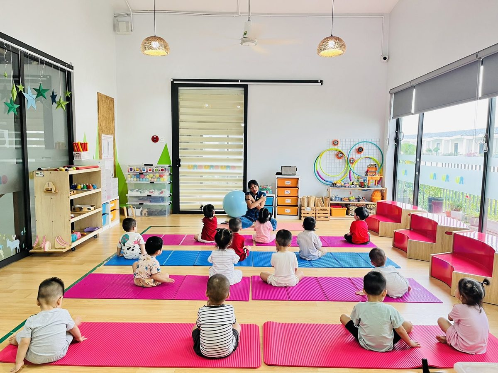
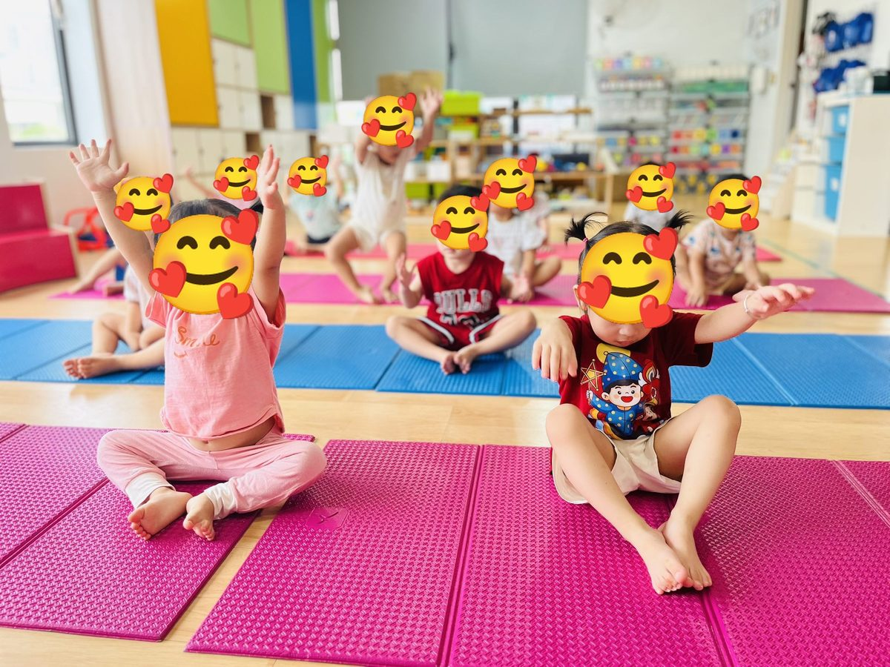
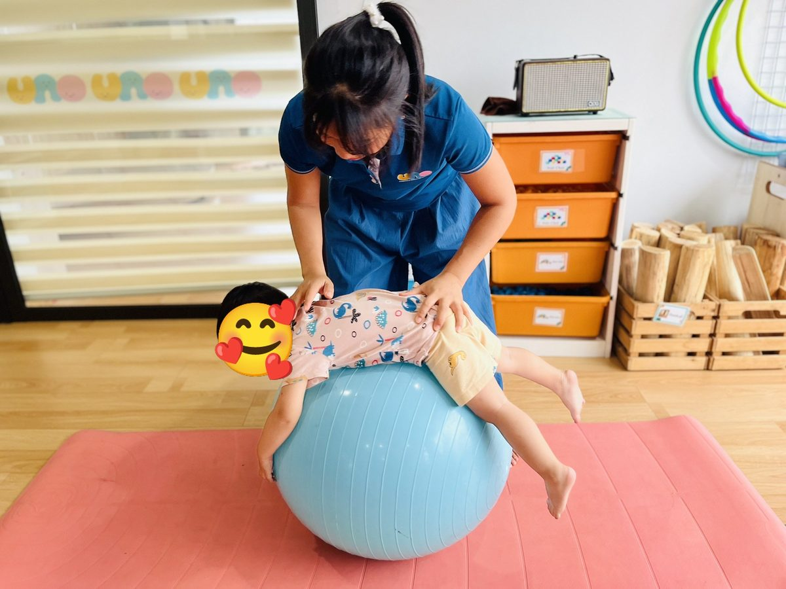
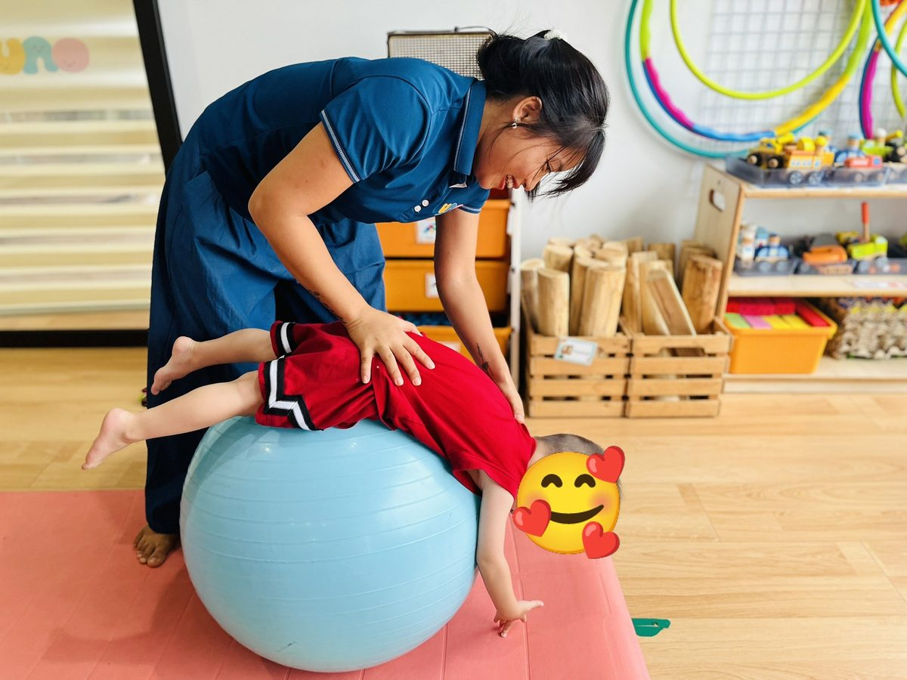
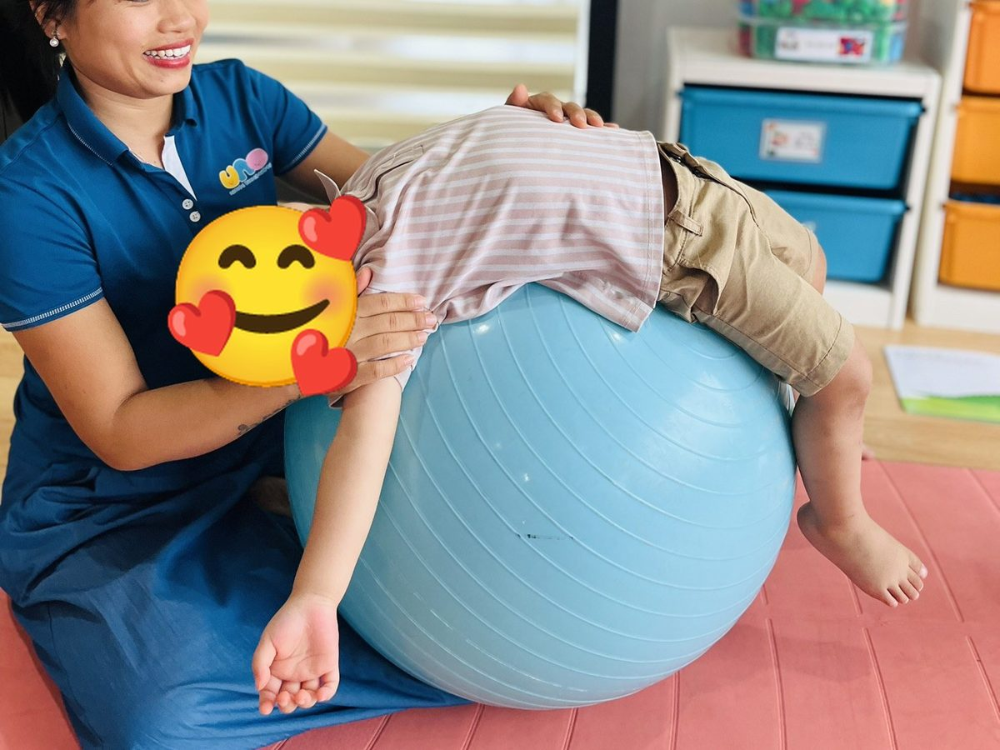
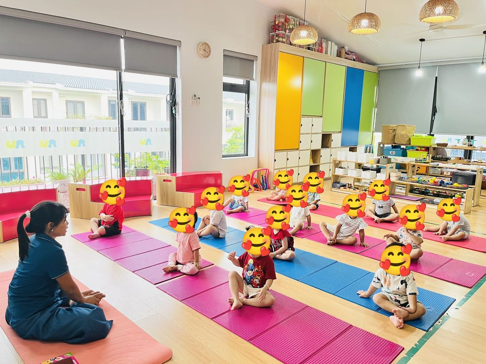
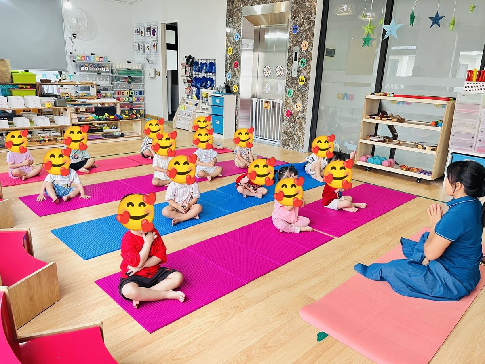

Chánh niệm · Tài liệu miễn phí
Quả bóng xanh trong lớp Yoga: vì sao giờ học nào cô cũng mang theo

Giờ Yoga nào cô cũng mang theo một quả bóng tròn to màu xanh. Cô đặt nó cạnh thảm của mình. Cô chưa nói gì về nó cả. Nhưng từ lúc chào nhau đến lúc khởi động, cô thấy cả chục đôi mắt nhỏ cứ liếc sang quả bóng.
Rồi cũng đến lúc. Cô lăn bóng ra giữa thảm. “Bạn nào muốn lên bóng với cô?” Cả lớp giơ tay. Có bạn đứng bật dậy luôn.
Từng bạn một. Cô đỡ con nằm lên, tay cô ở trên lưng con, và quả bóng bắt đầu lăn.
Vì sao cô đưa quả bóng vào mỗi giờ học?
Trẻ nhỏ học bằng cơ thể trước, bằng lời sau. Bảo một bạn hai, ba tuổi “con thả lỏng đi” thì con chưa hiểu thả lỏng là gì. Nhưng nằm trên quả bóng, bóng lăn nhè nhẹ, có hai bàn tay ấm giữ hai bên, con tự thả lỏng. Không ai phải dạy.
Quả bóng cũng là lúc riêng của cô với từng bạn. Lớp đông, cô không thể ngồi cạnh từng con suốt buổi. Nhưng một, hai phút trên bóng thì bạn nào cũng có. Trong một, hai phút ấy, cô chỉ nhìn con. Con biết điều đó.
Và cô muốn các con có một trải nghiệm thật nhỏ về niềm tin. Để cơ thể mình nằm trên một thứ tròn, lăn được, không đứng yên, mà vẫn thấy an toàn vì có người mình tin đang giữ. Cô nghĩ cảm giác ấy quý lắm. Lớn lên con sẽ cần nó nhiều lần.
Với cô, đó cũng là chánh niệm. Không phải ngồi im nhắm mắt. Mà là lúc con để ý bụng mình đang áp vào bóng, lưng mình đang được xoa, hơi thở mình chậm lại theo nhịp lăn. Ở ngay đây. Ngay lúc này.
Những gì cô thấy ở các con
Cô không dám nói quả bóng chữa được điều gì. Cô chỉ kể những gì cô thấy sau nhiều buổi tập cùng các con.
- Lưng và ngực được duỗi ra. Khi nằm ngửa trên bóng, ngực con mở, vai thả xuống, ngược hẳn với dáng cúi đầu mà các con hay ngồi. Khi nằm sấp, lưng con cong theo bóng thật mềm.
- Biết cơ thể mình đang ở đâu. Bóng lăn, con phải tự cảm nhận đầu ở đâu, tay ở đâu, chân ở đâu. Cô thấy các bạn tập bóng đều đặn thì giữ thăng bằng ở những tư thế khác vững hơn.
- Tay khỏe hơn một chút. Lúc lăn bóng về trước và chống hai tay xuống thảm, các con đỡ cả người bằng hai bàn tay nhỏ. Lần đầu tay còn run. Vài tuần sau thì không.
- Dịu lại sau phần vận động. Nhịp lăn chậm và bàn tay xoa lưng giúp cơ thể đang “chạy” của con chậm xuống. Nhiều bạn xuống bóng là nằm luôn trên thảm, rất yên.
- Can đảm hơn. Có bạn mấy buổi đầu chỉ đứng nhìn. Rồi một hôm tự đi ra, đặt tay lên bóng. Cô không vội. Chính con chọn lúc ấy.
- Chờ đến lượt. Bạn nào cũng muốn lên bóng. Nhưng ngồi chờ, nhìn bạn mình cười, cổ vũ bạn, rồi đến lượt mình. Các con học điều đó mà không cần cô nói.
Quả bóng nằm ở đâu trong buổi học?

- Chào nhau, thở cùng nhau: cả lớp ngồi trên thảm, cô ngồi đối diện. Quả bóng nằm yên bên cạnh cô.
- Khởi động và tư thế: vươn tay, xoay vai, rồi các tư thế con vật theo câu chuyện của buổi hôm đó.
- Lên bóng (10 đến 15 phút): cô lăn bóng ra giữa thảm, mời từng bạn. Các bạn còn lại ngồi thành vòng, đếm nhịp lăn cùng cô.
- Thư giãn và chào kết: cả lớp nằm xuống, thở chậm, rồi ngồi dậy chắp tay cảm ơn.
3 cách cô cho các con tập với bóng
Ảnh thật từ lớp Yoga trẻ em của cô Sophia. Khuôn mặt các bé được che để bảo vệ các con.
-

1Ôm quả bóng
🔵 Nằm sấp trên bóng
Cô nói với bé: “Con ôm quả bóng như ôm một chú cá voi nhé.”
Cách làm: Bé nằm sấp, bụng áp lên bóng, hai tay ôm vòng quanh. Một tay cô đặt ở vai, một tay ở hông con. Cô lăn bóng thật chậm, tới một chút, lùi một chút, rồi vừa giữ vừa xoa dọc theo lưng con.
Điều cô để ý: Lần đầu lên bóng, bạn nào cũng ôm chặt lắm. Vài nhịp lăn sau, hai tay nới ra, má áp vào bóng. Lúc đó cô biết con đã tin cô.
-

2Tay chạm đất
🔵 Bàn tay đi bộ
Cô nói với bé: “Bóng lăn về trước… tay con chạm đất chưa nào?”
Cách làm: Vẫn nằm sấp, cô giữ hai bên hông và lăn bóng về phía trước, đến khi hai bàn tay con chạm thảm. Con tự chống tay, đầu thả xuống. Cô giữ một lúc rồi lăn về chỗ cũ.
Điều cô để ý: Đây là lúc lớp cười to nhất. Nhìn thế giới lộn ngược, ai mà nhịn được. Bé nào chưa muốn thả đầu xuống thì cô chỉ lăn một chút thôi.
-

3Nằm ngửa trên bóng
🔵 Nằm trên đám mây
Cô nói với bé: “Con nằm trên đám mây. Thả tay ra nào.”
Cách làm: Cô ngồi bên cạnh, một tay đỡ sau gáy, một tay đỡ lưng, rồi để con ngả lưng lên bóng. Ngực con mở ra, hai tay buông xuống hai bên. Cô xoa nhẹ cổ và vai, đưa bóng lăn rất khẽ theo nhịp thở.
Điều cô để ý: Bàn tay cô dưới gáy con lúc nào cũng ở đó. Có bạn nhắm mắt, miệng cười tủm tỉm. Cô hỏi “con thích không?”, con gật mà không mở mắt.
Điều cô học được từ quả bóng

Có lần một bạn nhỏ nằm ngửa trên bóng, nhắm mắt, và hỏi cô: “Cô ơi, cô có giữ con không?” Cô bảo: “Cô đang giữ con đây.” Con cười, rồi thả hai tay xuống.
Chỉ vậy thôi.
Cô nghĩ mãi về câu hỏi ấy. Trẻ con không cần một quả bóng đứng yên. Con cần biết có người đang giữ mình, kể cả khi mọi thứ dưới lưng đang lăn. Cô mong các con mang cảm giác ấy theo thật lâu, ra khỏi lớp Yoga, vào những ngày con lớn.
Vài điều cô hay để ý
- Hai tay cô luôn ở trên người bé. Từ lúc con lên bóng đến lúc chân con chạm thảm. Cô không rời tay, kể cả một giây.
- Bóng vừa tầm. Cô chọn cỡ vừa với các bạn nhỏ, bơm vừa đủ căng, không cứng quá. Bóng to quá thì con bị treo cao, cô không dùng.
- Luôn có thảm êm bên dưới và khoảng trống xung quanh, không có đồ đạc gần bóng.
- Lăn thật chậm. Cô không nhún mạnh, không đẩy nhanh, không lăn xa.
- Bạn nào chưa muốn, cô không ép. Con có thể ngồi cạnh, đặt tay lên bóng, hoặc chỉ ngồi xem. Buổi sau cô lại hỏi.
- Không lên bóng ngay sau khi ăn no, và bé đang mệt, đang ốm thì cô để con nghỉ.
🌟 Điều các con mang về sau buổi tập
Ahimsa là yêu thương, không làm đau ai. Các con được nâng đỡ thật dịu dàng, và học cách nhẹ nhàng với bạn.
Ishvara pranidhana là buông và tin. Thả mình xuống quả bóng. Biết có người đang giữ. Thở.

Một quả bóng tròn, hai bàn tay cô, và một bạn nhỏ dám thả lỏng. Với cô, giờ Yoga có vậy là đủ đầy.